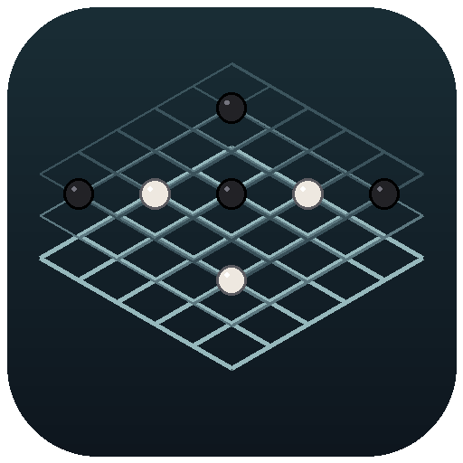

立体五子棋
NMOKU
13×13×6 三维连珠 · 立体 N 子棋
点击 N 或标题进入 · 移动鼠标有视差 · 右下角点击开启演示音
立体五子棋
NMOKU
开始游戏
继续对局
自定义对局
读档
快捷键说明
设置
退出
设计口径 / 操作说明（初步设计，未动工）

→
图标
：同几何亮色化（浅底 + 青灰层线），与 N 同族；
正式落地 = 重跑
make-icon.py
亮色参数（实施期）
N 的来历
：gomoku 之 N（4–9 连珠要素）；两竖 = 棋盘层叠，对角线 = 跨层胜利线——过渡后这条线落成小棋盘上的五连。
字体对位
：宋体 ↔ Times New Roman（多语言西文）；日语等默认 LXGW；本页暂全 LXGW 占位。
动效
：视差 ≤14px 双层反向；悬停 glow；点击过渡 750ms（滑左+旋转 540°+缩小→小棋盘接棒匀速自旋 9s/圈）。
音乐响应
：演示音 = WebAudio 合成琶音 + 响度分析 → N 光晕呼吸/背景光斑；正式版接 BGM 总线响度。
音量图标
：右下半透明四态，点击循环 静音/1/2/3（正式版 M 键 + 设置页同步）。
进入后标题缩小位置（三选一）：
左上角
顶居中
棋盘下方
↺ 返回预开始页